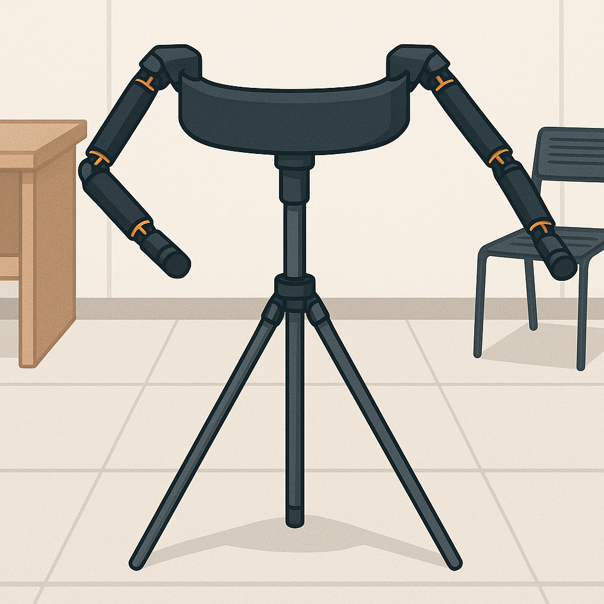
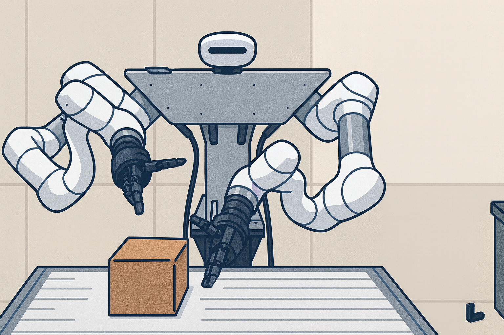
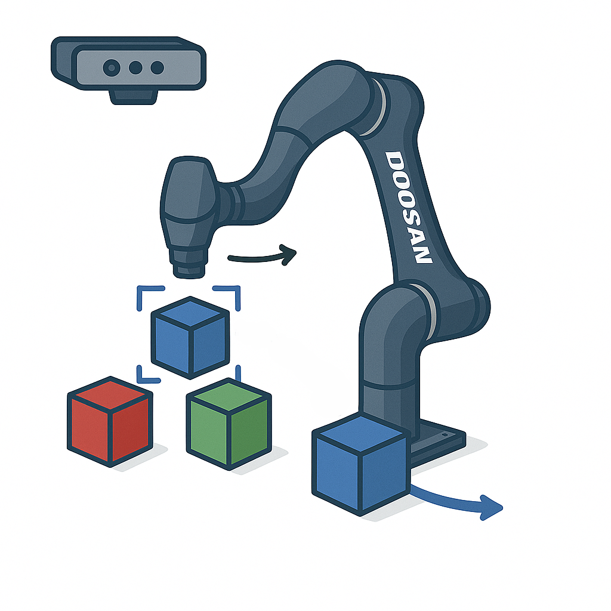
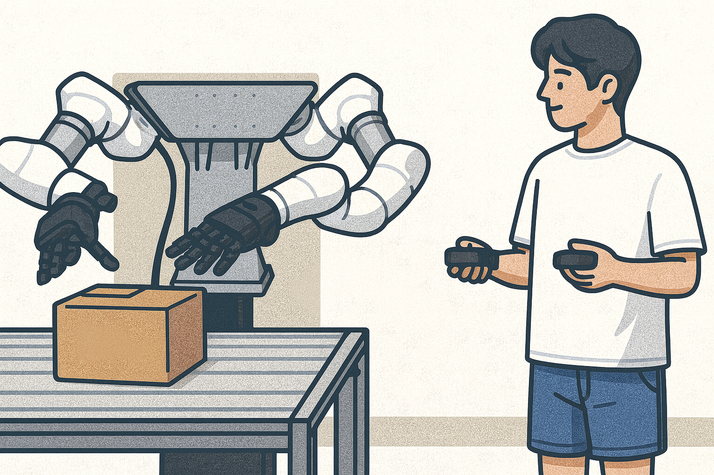
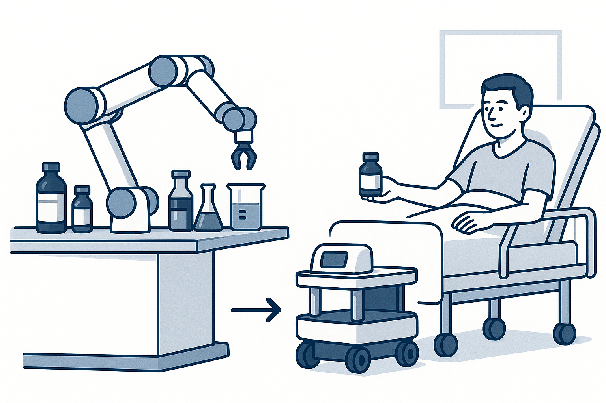

Imitation Learning
Multimodal imitation learning with vision and force for dexterous manipulation, including evaluation of multiple policies and refinement of their internal architectures.
Vision–Force Multimodal Imitation Learning Force-feedback Leader-arm Teleoperation · Impedance Control
I develop learning-based systems for precise dual-arm and dual-hand manipulation from multimodal demonstrations.
Patent application
Force-feedback leader arm
Robotics Conference Award
1st Prize · KRoC 2026 RED Show
Robot Control Internship
Doosan Robotics · Jul - Oct 2024
Final M.S. GPA
4.0 / 4.5 · SKKU
01 Profile
I am a Mechanical Engineering M.S. student at Sungkyunkwan University specializing in robotics. My work focuses on learning and control systems for manipulators that can acquire precise, transferable skills from human demonstrations.
I have built a VR-tracker teleoperation system and, separately, a force-feedback leader-arm teleoperation system designed specifically to collect high-quality demonstration data. I also developed a ROS 2 visual-servoing package during an internship with the Robot Control Team at Doosan Robotics.
For imitation learning, I have evaluated multiple policies and modified their internal architectures to improve learning performance. My current research extends vision–proprioception policy architectures to learn from force as an additional modality for dexterous, learning-based control of dual-arm robots with hands.
Multimodal imitation learning with vision and force for dexterous manipulation, including evaluation of multiple policies and refinement of their internal architectures.
Force-feedback leader-arm teleoperation for high-quality demonstration collection, alongside a separate VR-tracker teleoperation system.
Impedance control, visual servoing, and gravity compensation.
02 Projects

Featured · TeleoperationDeveloped a leader–follower system with gravity compensation and operator force feedback for contact-rich manipulation, designed to improve the quality of demonstrations for force-aware imitation learning. The same leader-arm interface also supports teleoperation of robot models in NVIDIA Isaac Sim.

Robot LearningEvaluated and customized multiple policy architectures, collected teleoperation demonstrations, and deployed policies across single-arm, dual-arm, and dual-arm-with-hands setups. Current work extends vision–proprioception inputs with force.

Robot ControlDeveloped a Python-based ROS 2 visual-servoing package, built an SDF/Gazebo simulation, and ran the system in simulation and on physical hardware.

TeleoperationBuilt a VR-tracker teleoperation system for demonstration collection with transformation-matrix-based safety limits and a SLAM-enabled variant.

Integrated RoboticsDesigned a manipulator-and-AMR workflow that verifies patient information, prepares prescribed medication, and delivers it autonomously.
 Autonomous Systems
Autonomous Systems
Built a custom AMR and compared four navigation configurations combining GMapping and Hector SLAM with TEB and DWA local planners.
03 Experience
Jul — Oct
Seongnam, Korea
Developed a visual-servoing example package for Doosan robot systems.
04 Patent & Awards
Inventor · System design · Force-feedback control · Teleoperation implementation
2026 · Korea Robotics Society
Awarded in February 2026, the project is also associated with a filed patent application for the force-feedback leader-arm system.
2024 · Chung-Ang University LINC 3.0
Awarded in June 2024, the study compared sensor options with navigation-algorithm characteristics for autonomous mobile robot design.
2024 · KG ICT
Awarded in June 2024, the system paired a cobot for pharmaceutical preparation with an AMR for autonomous delivery.
05 Skills
Additional Republic of Korea Army · Sergeant · May 2021 — Nov 2022
06 Education
Suwon, Republic of Korea
Seoul, Republic of Korea
07 Contact
Interested in robotics research, engineering opportunities, or collaboration?
chemx3937@gmail.com